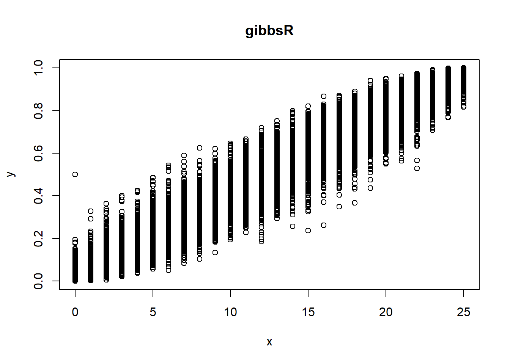

11 第11次作业解答
11.1 Question
Write an Rcpp function for Exercise 9.8 (page 278, Statistical Computing with R).
- Compare the corresponding generated random numbers with pure R language using the function “qqplot”.
- Campare the computation time of the two functions with the function “microbenchmark”.
- Comments your results.
11.2 Answer
This example appears in \([40]\). Consider the bivariate density \[ f(x, y) \propto\left(\begin{array}{l} n \\ x \end{array}\right) y^{x+a-1}(1-y)^{n-x+b-1}, \quad x=0,1, \ldots, n, 0 \leq y \leq 1 \] It can be shown (see e.g. [23]) that for fixed \(a, b, n\), the conditional distributions are Binomial \((n, y)\) and Beta \((x+a, n-x+b)\). Use the Gibbs sampler to generate a chain with target joint density \(f(x, y)\).
11.2.1 Gibbs in R
a=1
b=1
N=10000
n=25
gibbsR=function(a,b,n,N){
X=matrix(0, N, 2) #样本阵
X[1,]=c(0,0.5)
for(i in 2:N){
X2= X[i-1, 2]
X[i,1]=rbinom(1,25,X2)
X1=X[i,1]
X[i,2]=rbeta(1,X1+a,25-X1+b)
}
return(X)
}
X=gibbsR(a,b,n,N)
plot(X[,1],X[,2],xlab = "x",ylab = "y",main = "gibbsR")
11.2.2 Gibbs in C
library(Rcpp)
dir="D:/Software/Github/2021Fall/Statistical_Computing/Homework/hw10/"
sourceCpp(paste0(dir,"R.cpp"))
Xc=gibbsC(a,b,n,N)
plot(Xc[,1],Xc[,2],xlab = "x",ylab = "y",main="gibbsC")11.2.3 QQ plot
qqplot(X[,1],Xc[,1],xlab = "gibbsR",ylab = "gibbsC",main="第1维变量QQ图")
abline(0,1,col = "red")
qqplot(X[,2],Xc[,2], xlab = "gibbsR",ylab = "gibbsC",main="第2维变量QQ图")
abline(0,1,col = "red")Rcpp和R产生的随机数的QQ图基本在一条直线上, 所以产生的随机数的分布基本一致。
11.2.4 Time
library(microbenchmark)
ts=microbenchmark(gibbR=gibbsR(a,b,n,N), gibbC=gibbsC(a,b,N,n))
summary(ts)[,c(1,3,5,6)]Rcpp运行的平均时间是20ms左右, 但R里运行的时间50000ms左右,Rcpp的效率远高于R